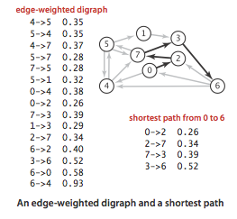
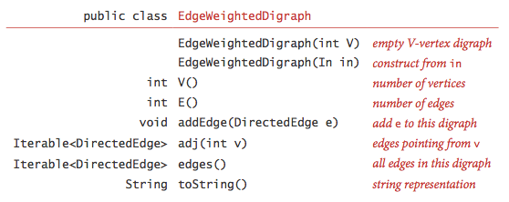
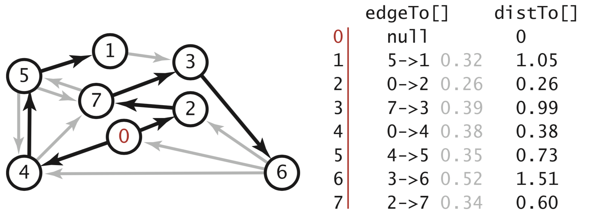
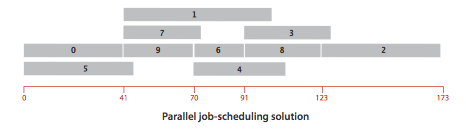
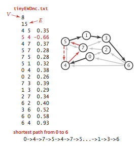
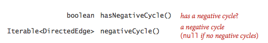
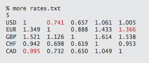
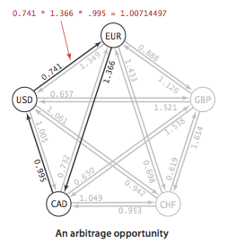

Shortest Paths
§ Shortest paths.
An edge-weighted digraph is a digraph where we associate weights or costs with each edge. A shortest path from vertex s to vertex t is a directed path from s to t with the property that no other such path has a lower weight.

§ Properties.
We summarize several important properties and assumptions.
- Paths are directed. A shortest path must respect the direction of its edges.
- The weights are not necessarily distances. Geometric intuition can be helpful, but the edge weights weights might represent time or cost.
- Not all vertices need be reachable. If t is not reachable from s, there is no path at all, and therefore there is no shortest path from s to t.
- Negative weights introduce complications. For the moment, we assume that edge weights are positive (or zero).
- Shortest paths are normally simple. Our algorithms ignore zero-weight edges that form cycles, so that the shortest paths they find have no cycles.
- Shortest paths are not necessarily unique. There may be multiple paths of the lowest weight from one vertex to another; we are content to find any one of them.
- Parallel edges and self-loops may be present. In the text, we assume that parallel edges are not present and use the notation v->w to refer to the edge from v to w, but our code handles them without difficulty.
§ Edge-weighted digraph data type.
We represent the weighted edges using the following API:

The from() and to() methods are useful for accessing the edge's vertices. DirectedEdge.java implements this API.
We represent edge-weighted digraphs using the following API:

EdgeWeightedDigraph.java implements the API using the adjacency-lists representation.

§ Shortest paths API.
We use the following API for computing the shortest paths of an edge-weighted digraph:

We prepare some test data:
- tinyEWD.txt contains 8 vertices and 15 edges
- mediumEWD.txt contains 250 vertices and 2,546 edges
- 1000EWG.txt contains 1,000 vertices and 16,866 edges
- 10000EWG.txt contains 10,000 vertices and 123,462 edges
- largeEWG.txt contains one million vertices and 15,172,126 edges.
§ Data structures for single-source shortest paths.
Given an edge-weighted digraph and a designated vertex s, a shortest-paths tree (SPT) is a subgraph containing s and all the vertices reachable from s that forms a directed tree rooted at s such that every tree path is a shortest path in the digraph.
We represent the shortest paths with two vertex-indexed arrays:
- Edges on the shortest-paths tree: edgeTo[v] is the the last edge on a shortest path from s to v.
- Distance to the source: distTo[v] is the length of the shortest path from s to v.

§ Relaxation.
Our shortest-paths implementations are based on an operation known as relaxation. We initialize distTo[s] to 0 and distTo[v] to infinity for all other vertices v.
- Edge relaxation.
To relax an edge v->w means to test whether the best known way from s to w is to
go from s to v, then take the edge from v to w, and, if so, update our data structures.
private void relax(DirectedEdge e) { int v = e.from(), w = e.to(); if (distTo[w] > distTo[v] + e.weight()) { distTo[w] = distTo[v] + e.weight(); edgeTo[w] = e; } }
- Vertex relaxation.
All of our implementations actually relax all the edges pointing from
a given vertex.
private void relax(EdgeWeightedDigraph G, int v) { for (DirectedEdge e : G.adj(v)) { int w = e.to(); if (distTo[w] > distTo[v] + e.weight()) { distTo[w] = distTo[v] + e.weight(); edgeTo[w] = e; } } }
§ Dijkstra's algorithm.
Dijkstra's algorithm initializing dist[s] to 0 and all other distTo[] entries to positive infinity. Then, it repeatedly relaxes and adds to the tree a non-tree vertex with the lowest distTo[] value, continuing until all vertices are on the tree or no non-tree vertex has a finite distTo[] value. DijkstraSP.java is an efficient implementation of Dijkstra's algorithm. It uses IndexMinPQ.java for the priority queue.
§ Proposition.
Dijkstra's algorithm solves the single-source shortest-paths problem in edge-weighted digraphs with nonnegative weights using extra space proportional to V and time proportional to E log V (in the worst case).
§ Acyclic edge-weighted digraphs.
We use the term edge-weighted DAG to refer to an acyclic edge-weighted digraph.
- Single-source shortest paths problem in edge-weighted DAGs.
We now consider an algorithm for finding shortest paths that is simpler and faster
than Dijkstra's algorithm for edge-weighted DAGs.
- It solves the single-source problem in linear time.
- It handles negative edge weights.
- It solves related problems, such as finding longest paths.
The algorithm combines vertex relaxation with topological sorting. We initialize distTo[s] to 0 and all other distTo[] values to infinity, then relax the vertices, one by one, taking the vertices in topological order. AcyclicSP.java is an implementation of this approach. It relies on this version of Topological.java, extended to support edge-weighted digraphs.
- Single-source longest paths problem in edge-weighted DAGs. We can solve the single-source longest paths problems in edge-weighted DAGs by initializing the distTo[] values to negative infinity and switching the sense of the inequality in relax(). AcyclicLP.java implements this approach.
- Critical path method.
We consider the parallel precedence-constrained job scheduling problem:
Given a set of jobs of specified duration to be completed, with precedence
constraints that specify that certain jobs have to be completed before
certain other jobs are begun, how can we schedule the jobs on identical
processors (as many as needed) such that they are all completed in
the minimum amount of time while still respecting the constraints?


This problem can be solved by formulating it as a longest paths problem in an edge-weighted DAG: Create an edge-weighted DAG with a source s, a sink t, and two vertices for each job (a start vertex and an end vertex). For each job, add an edge from its start vertex to its end vertex with weight equal to its duration. For each precedence constraint v->w, add a zero-weight edge from the end vertex corresponding to v to the beginning vertex corresponding to w. Also add zero-weight edges from the source to each job's start vertex and from each job's end vertex to the sink.

Now, schedule each job at the time given by the length of its longest path from the source.
img src="../../images/pages/gr/44sp/scheduling-critical-path.png" alt = "Job-scheduling problem critical path">
CPM.java is an implementation of the critical path method.
§ Proposition.
By relaxing vertices in topological order, we can solve the single-source shortest-paths and longest-paths problems for edge-weighted DAGs in time proportional to E + V.
§ Shortest paths in general edge-weighted digraphs.
We can solve shortest path problems if (i) all weights are nonnegative or (ii) there are no cycles.
- Negative cycles.
A negative cycle is a directed cycle whose total weight (sum of the weights
of its edges) is negative.
The concept of a shortest path is meaningless if there is a negative cycle.

Accordingly, we consider edge-weighted digraphs with no negative cycles.
- Bellman-Ford algorithm.
Initialize distTo[s] to 0 and
all other distTo[] values to infinity. Then, considering the digraph's
edges in any order, and relax all edges. Make V such passes.
for (int pass = 0; pass < G.V(); pass++) for (int v = 0; v < G.V(); v++) for (DirectedEdge e : G.adj(v)) relax(e);We do not consider this version in detail because it always relaxes V E edges.
- Queue-based Bellman-Ford algorithm.
The only edges that could lead to a change in distTo[] are those
leaving a vertex whose distTo[] value changed in the previous pass. To keep
track of such vertices, we use a FIFO queue.
BellmanFordSP.java implements this approach
by maintaining two additional data structures:
- A queue of vertices to be relaxed
- A vertex-index boolean array onQ[] that indicates which vertices are on the queue, to avoid duplicates
- Negative cycle detection.
In many applications, our goal is to check for and
to check for and extract negative cycles. Accordingly, we add the following
methods to the API:

There is a negative cycle reachable from the source if and only if the queue is nonempty after the Vth pass through all the edges. Moreover, the subgraph of edges in our edgeTo[] array must contain a negative cycle. Accordingly, to implement negativeCycle() BellmanFordSP.java builds an edge-weighted digraph from the edges in edgeTo[] and looks for a cycle in that digraph. To find the cycle, it uses EdgeWeightedDirectedCycle.java, a version of DirectedCycle.java from Section 4.3, adapted to work for edge-weighted digraphs. We amortize the cost of this check by performing this check only after every Vth edge relaxation.
- Arbitrage detection.
Consider a market for financial transactions that is based on
trading commodities.
The table in rates.txt
shows conversion rates among currencies.
The first line in the file is the number V of currencies;
then the file has one line per currency,
giving its name followed by the conversion rates to the other currencies.
An arbitrage opportunity is a directed cycle
such that the product of the exchange rates is greater than one.
For example, our table says that 1,000 U.S. dollars will buy
1,000.00 × .741 = 741 euros,
then we can buy 741 × 1.366 = 1,012.206 Canadian dollars with our euros,
and finally, 1,012.206 × .995 = 1,007.14497 U.S. dollars with our Canadian
dollars, a 7.14497-dollar profit!
  To formulate the arbitrage problem as a negative-cycle detection problem, replace each weight by its logarithm, negated. With this change, computing path weights by multiplying edge weights in the original problem corresponds to adding them in the transformed problem. Arbitrage.java identifies arbitrage opportunities in a currency-exchange network by solving the corresponding negative cycle detection problem.
 Proposition.
Proposition.
There exists a shortest path from s to v in an edge-weighted digraph if and only if there exists at least one directed path from s to v and no vertex on any directed path from s to v is on a negative cycle.
Proposition.
The Bellman-Ford algorithm solves the single-source shortest-paths problem from a given source s (or finds a negative cycle reachable from s) for any edge-weighted digraph with V vertices and E edges, in time proportional to E V and extra space proportional to V, in the worst case.
Q + A
Q. Does Dijkstra's algorithm work with negative weights?
A. Yes and no. There are two shortest paths algorithms known as Dijkstra's algorithm, depending on whether a vertex can be enqueued on the priority queue more than once. When the weights are nonnegative, the two versions coincide (as no vertex will be enqueued more than once). The version implemented in DijkstraSP.java (which allows a vertex to be enqueued more than once) is correct in the presence of negative edge weights (but no negative cycles) but its running time is exponential in the worst case. (We note that DijkstraSP.java throws an exception if the edge-weighted digraph has an edge with a negative weight, so that a programmer is not surprised by this exponential behavior.) If we modify DijkstraSP.java so that a vertex cannot be enqueued more than once (e.g., using a marked[] array to mark those vertices that have been relaxed), then the algorithm is guaranteed to run in E log V time but it may yield incorrect results when there are edges with negative weights.